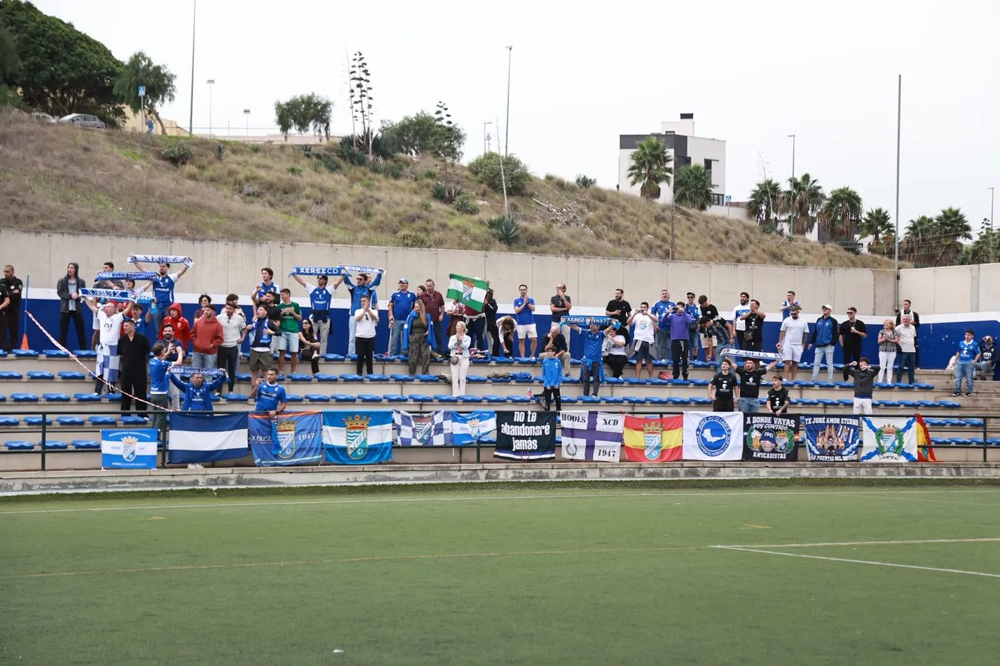

Xerez sell out first 500 tickets for Atlético Central game and put another 500 on sale

Photo: Diario XerecistaXerez supporters snapped up the first batch of tickets for Sunday's game in Alcalá de Guadaíra in a single day.
Xerez CD have sold out the first 500 tickets sent by Atlético Central for Sunday's game, on 22 November at 12:00 at the Ciudad de Alcalá. The tickets were sold in a single day at the club offices, and the club has already put another 500 on sale.
Atlético Central could make up to 1,500 tickets available to Xerez, and the club will keep asking for more depending on demand.
Tickets cost 11 euros in advance and 16 at the ground on match day. Under-12s get in free on showing their ID card.
🇪🇸 Leer en español ← Back to home